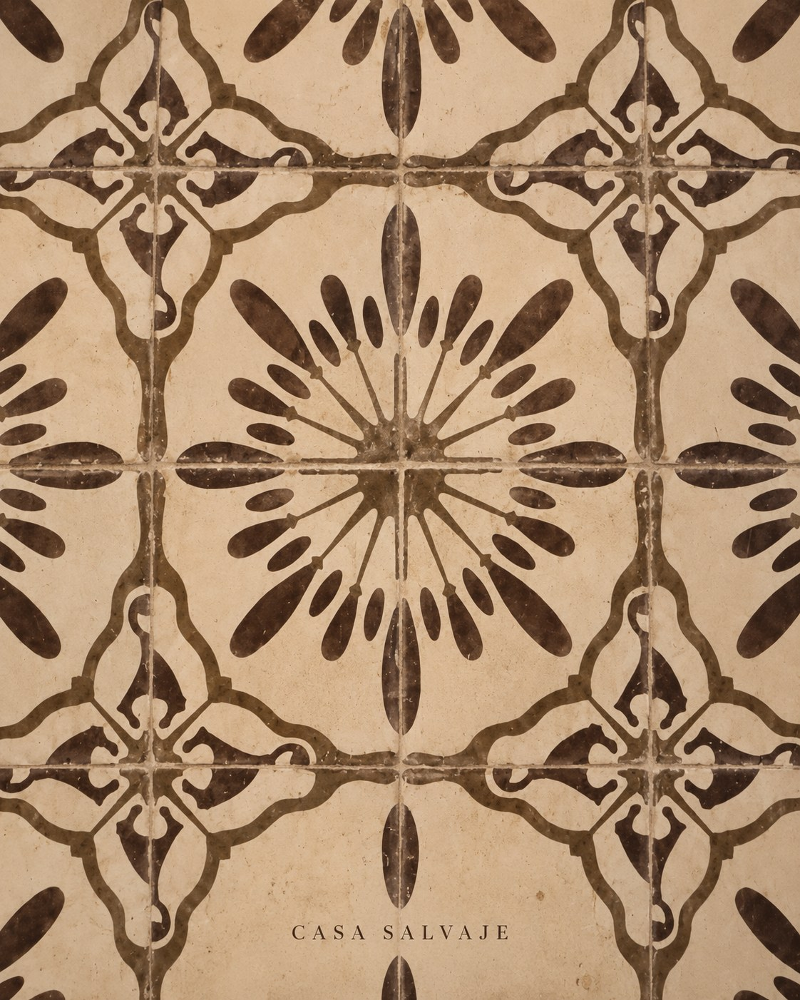

Goodbye horse carriages: how Cartagena's electric carriages work in the Old City
The horses are gone from the walled city's streets. Rides now run in electric carriages, driven by the same coachmen.
Leer en español →
For decades, horse-drawn carriages were part of Cartagena's postcard. They were also the subject of a long debate about animal welfare, with horses working hours in the Caribbean heat on stone streets. That chapter is closed: today rides through the Old City run in electric carriages.
Alejandro Riaño's campaign
The push came from civil society. Colombian comedian Alejandro Riaño led a crowdfunding drive, backed by thousands of donors, to pay for a first electric carriage prototype styled like the traditional ones. In January 2024 he handed it to the city of Cartagena, which began trials with the coachmen in the Old City.
From prototype to system
From there the city built a sustainable tourist transport system to replace animal traction. Horse carriages were banned at the end of 2025, a free pilot drew a strong response, and the mayor's office then handed the keys of 60 electric carriages to the families who had made a living from the horse carriages. Commercial operation is run by the Coachmen's Association: the same coachmen who know every corner of the city now drive the electric carriages.
How to take a ride
- Hours: according to the city, rides run from 9 am to 11 pm.
- Where to board: authorised points include Baluarte de Santo Domingo, La Serrezuela, Parque Bolívar, Plaza de San Pedro Claver and Plaza de los Coches.
- Rides: there are short and long routes, and prices change between low and high season. Agree the fare with the driver before you set off; reference prices are on the city's official page.
A sunset ride past the walls and plazas, then dinner at Casa Salvaje: we're at Calle Santa Teresa #32-41, two blocks from Plaza Santo Domingo and close to the Baluarte. Check opening hours and book your table.
A city that changes
The switch wasn't simple: it took agreements with the coachmen, traffic permits and months of trials. But the result is a city that keeps a tradition without the cost to the animals. If an Old City ride is on your list, now is the time.
Sources: Alcaldía de Cartagena, El Tiempo, El Colombiano.